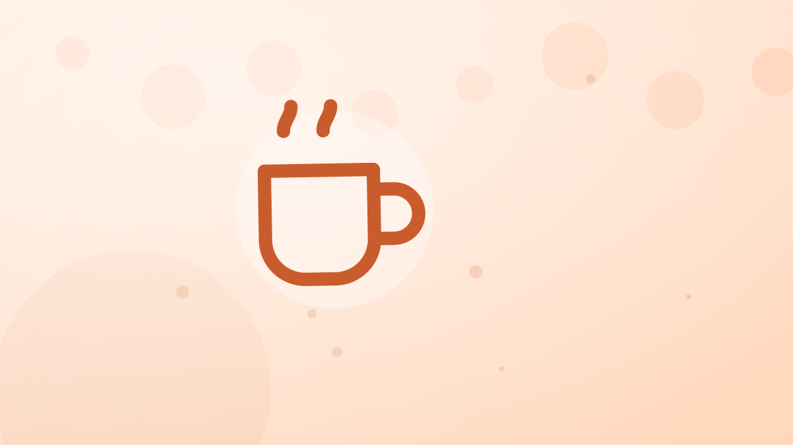

Cuántas calorías tienen las tapas: caña, bravas, croquetas, pincho de tortilla y jamón
Nadie cuenta las calorías de una tarde de tapas, y por eso es la comida que más desordena una semana. Cada tapa y cada caña con su cifra por ración, dos tardes reales sumadas (370 y 926 kcal) y los cambios que no se notan en la mesa.

Una tarde de tapas tiene dos cosas que la hacen difícil de registrar: se come de pie o compartiendo, sin plato propio, y se bebe mientras tanto. El resultado es que acaba en el diario como «unas tapas» o no acaba. Esto es lo que cuesta cada pieza, por ración tal como la sirven, con las cifras de las páginas de calorías de platos españoles, las mismas de la app. Primero las bebidas, porque son las que más veces se repiten.
Lo que se bebe
- Caña, 200 ml: 86 kcal.
- Tercio, 330 ml: 142 kcal.
- Tinto de verano, 250 ml: 108 kcal.
- Copa de vino tinto, 150 ml: 128 kcal.
- Coca-Cola Zero, lata: 7 kcal. Agua con gas: 0.
Tres cañas son 258 kcal; tres tercios, 426. La diferencia entre pedir cañas y tercios en una tarde larga es un pincho de tortilla entero. Y el alcohol tiene otro efecto que no sale en la cifra: baja la guardia con la siguiente ración.
Lo que se come
- Pincho de tortilla, 120 g: 198 kcal.
- Patatas bravas, ración de 200 g: 380 kcal; media ración compartida, 190.
- Croquetas de jamón, 4 unidades: 290 kcal; unos 72 por croqueta.
- Jamón serrano, plato de 50 g: 120 kcal.
- Gambas al ajillo, 150 g: 325 kcal; a la plancha, las mismas gambas, 130.
- Calamares a la romana, 150 g: 255 kcal.
- Boquerones fritos, 150 g: 280 kcal.
- Pimientos de Padrón, 120 g: 120 kcal.
- Champiñones al ajillo, 180 g: 163 kcal.
- Queso con picos, 70 g: 240 kcal.
- Bocadillo de calamares, el de verdad: 408 kcal.
La regla que sale de la lista: lo que va frito o en aceite (bravas, croquetas, gambas al ajillo, boquerones) está entre 250 y 380 por ración; lo que va a la plancha, en vinagre o solo (jamón, pimientos, gambas a la plancha) entre 120 y 165. El pincho de tortilla, con 198, queda en medio y llena más que casi todo lo demás.
Tarde corta: dos cañas y un pincho, 370 kcal
Dos cañas (172) y un pincho de tortilla (198): 370 kcal. Es la salida de después del trabajo y cabe en cualquier día sin tocar la cena. Si el pincho se cambia por media de bravas, la tarde sube a 362: casi igual en calorías, pero con la mitad de proteína y menos saciedad.
Tarde de sábado: 926 kcal antes de cenar
- Tres cañas: 258 kcal.
- Media ración de bravas: 190 kcal.
- Cuatro croquetas: 290 kcal.
- Medio plato de jamón: 60 kcal.
- Media ración de calamares: 128 kcal.
Total: 926 kcal, repartidas en dos horas y sin sentarse a comer. Para la mujer de 2.130 kcal de gasto que usa de ejemplo la calculadora de calorías diarias es el 43 % del día; para el hombre de 2.780, un tercio. Y después suele venir la cena. No es una catástrofe: es un sábado. El problema es cuando el sábado se apunta como cero.
Los cambios que no se notan en la mesa
- Caña en vez de tercio: 56 kcal por ronda; 168 en tres.
- Una ronda de agua con gas o Zero entre medias: 86 kcal menos y, sobre todo, una ronda menos de picar.
- Gambas a la plancha en vez de al ajillo: 195 kcal. Es el cambio más grande de la carta y nadie lo nota.
- Pimientos o jamón en vez de la segunda ración frita: 150 a 250 kcal.
- El pincho de tortilla como ancla: 198 kcal que quitan el hambre; después se pica la mitad.
Con los cambios 1, 3 y 4 la tarde de sábado baja de 926 a unas 560 sin que nadie en la mesa se dé cuenta de que has cambiado algo.
Cuando las tapas son la cena
Hay una versión de la tarde de tapas que no es un extra sino la cena entera, y ahí las cuentas cambian de signo. Una cena normal en casa (merluza a la plancha con verdura, pan y una pieza de fruta) ronda las 400 a 500 kcal. La tarde de sábado de arriba, 926, la dobla; la tarde corta, 370, se queda por debajo. Si lo que se va a hacer es cenar de tapas, conviene pedir como si fuera una cena: una ración de algo con proteína que llene (gambas a la plancha, 130; sepia a la plancha, 170; jamón, 120; un pincho de tortilla, 198), una de verdura (pimientos, 120; champiñones, 163) y una sola ración frita para compartir. Eso son 550 a 650 kcal con dos cañas, que es una cena fuera perfectamente normal, y se registra igual de fácil que en casa.
Lo que no funciona es el término medio: picar «algo» a las ocho pensando que luego se cena ligero. A las diez se cena lo de siempre, y el día acaba con una comida de más. Si hay tapas, que sean la cena; si no, que sean la tarde corta y la cena de verdad después.
Compartir engaña en las dos direcciones
Las raciones compartidas son la razón de que una tarde de tapas se registre mal. «Media de bravas» es una cifra honesta si en la mesa sois dos; si sois cuatro y pediste dos raciones, también son 190 por cabeza, y si pediste una entre cuatro, son 95. La regla que menos falla es apuntar lo que pediste dividido entre los que erais, y no «lo que crees que comiste», porque lo que crees siempre es menos. Con las bebidas no hay reparto posible: cada ronda es tuya.
Cómo registrar una tarde de tapas
Por piezas, al llegar a casa si hace falta. Las raciones de bar son estables (una de bravas son 200 g, cuatro croquetas 120, un pincho 120) y la app las tiene con ese peso; con una tapa compartida se registra la mitad o un tercio. Las bebidas se apuntan por unidad, y se cuentan todas. Si una semana sale descuadrada sin motivo, casi siempre está aquí: en el sábado que se registró como nada.
Ideas clave
- Una tarde corta son unas 370 kcal; una de sábado con tres cañas y cuatro tapas compartidas, unas 926. Ninguna de las dos se apunta, y eso es lo que las hace caras.
- Frito o en aceite: 250 a 380 por ración. Plancha, vinagre o jamón: 120 a 165.
- Los tres cambios grandes: caña y no tercio, plancha y no ajillo, y una ronda sin alcohol.
- Se registra por piezas y por rondas, aunque sea al llegar a casa.
Preguntas que hace la gente
¿Cuántas calorías tiene una caña y una tapa?
Una caña son 86 kcal. Con un pincho de tortilla, 284; con media ración de bravas, 276; con un plato de jamón, 206; con cuatro croquetas, 376. Lo que decide la cifra es la tapa, y dentro de la tapa, si va frita.
¿Qué tapas tienen menos calorías?
Las que no pasan por aceite: pimientos de Padrón (120 kcal la ración), jamón serrano (120 el plato de 50 g), gambas a la plancha (130), champiñones al ajillo (163). El pincho de tortilla (198) no es de las más bajas, pero es de las que más llenan.
¿Engorda más la cerveza o las tapas?
En una tarde larga, las tapas: 668 kcal de comida frente a 258 de tres cañas en la tarde de sábado del artículo. Pero la cerveza se repite más veces y es la que decide cuántas rondas de picar hay. Tres tercios en vez de tres cañas añaden 168 kcal más.
Este artículo es información general, no consejo médico.
Herramientas: calorías diarias · déficit calórico · macros · IMC · calorías de platos españoles